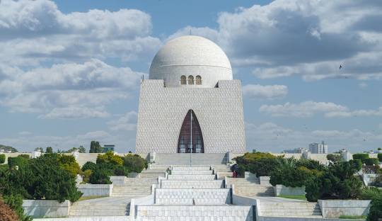

محمد علی جناح پیدائشی نام، محمد علی جناح بھائی، 25 دسمبر 1876ء – 11 ستمبر 1948ء) کے نامور وکیل، سیاست دان اور بانی پاکستان تھے۔ محمد علی جناح 1913ء سے لے کر پاکستان کی آزادی 14 اگست 1947ء تک آل انڈیا مسلم لیگ کے سربراہ رہے، پھر قیام پاکستان کے بعد اپنی وفات تک، وہ ملک کے پہلے گورنر جنرل رہے۔ سرکاری طور پر پاکستان میں آپ کو قائدِ اعظم یعنی سب سے عظیم رہبر اور بابائے قوم یعنی قوم کا باپ بھی کہا جاتا ہے۔ جناح کا یومِ پیدائش پاکستان میں قومی تعطیل کے طور پر منایا جاتا ہے۔
محمد علي جناح (ولد محمد علي جناحهابي؛ 25 ديسمبر 1876 - 11 سبتمبر 1948) كان محاميًا وسياسيًا ومؤسس باكستان. شغل جناح منصب زعيم الرابطة الإسلامية لعموم الهند من عام 1913 حتى تأسيس باكستان في 14 أغسطس 1947 ثم أصبح أول حاكم عام لباكستان حتى وفاته.
Muhammad Ali Jinnah (born Mahomed ali Jinnah bhai; 25 December 1876 – 11 September 1948) was a barrister, politician, and the founder of Pakistan. Jinnah served as the leader of the All-India Muslim League from 1913 until the inception of Pakistan on 14 August 1947 and then as Pakistan's first governor-general until his death.